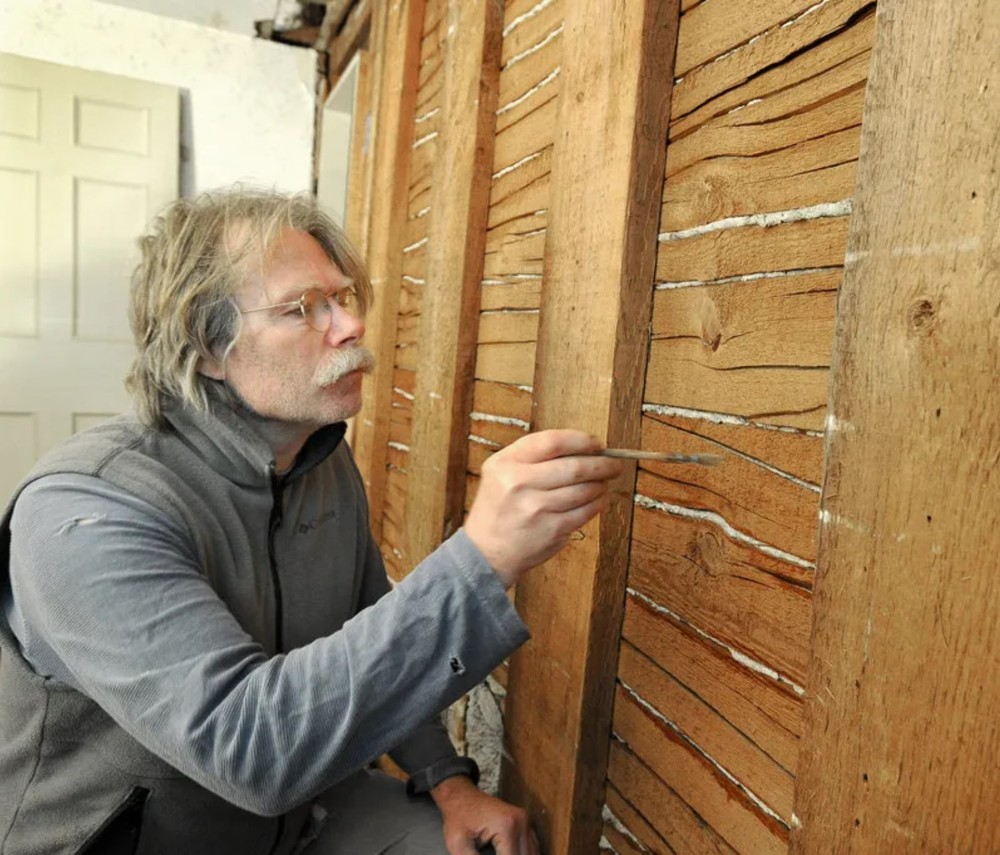
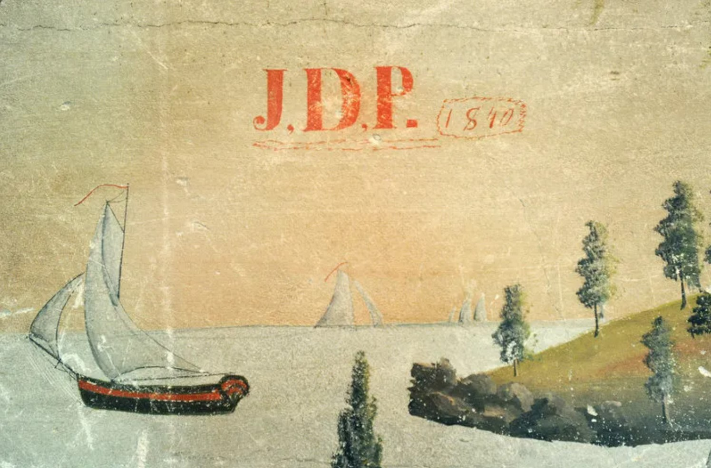
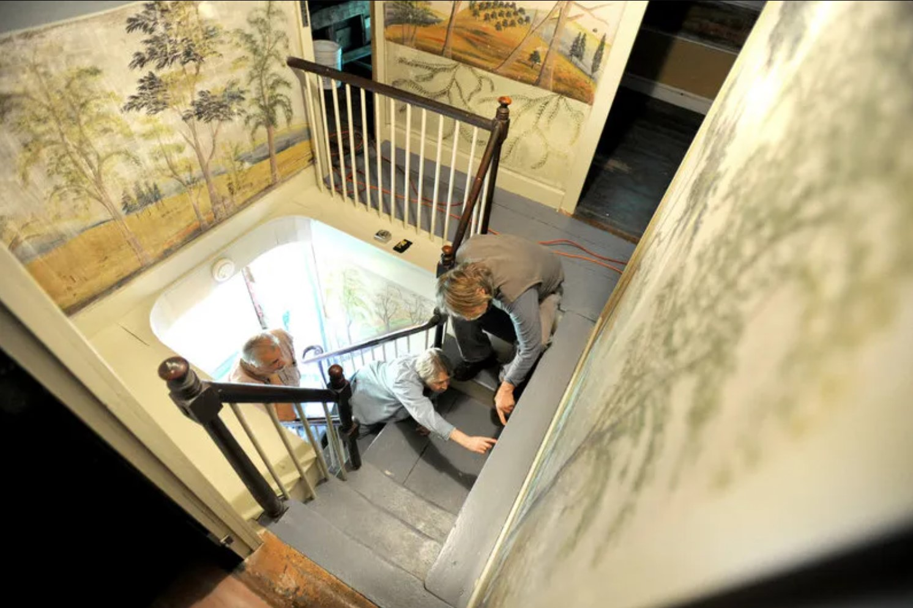
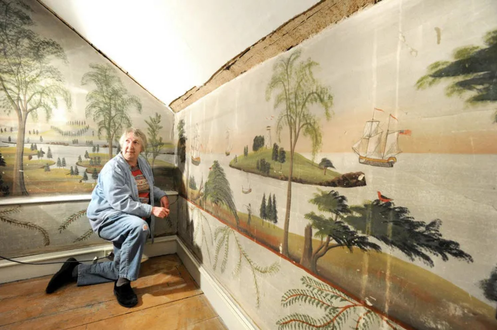
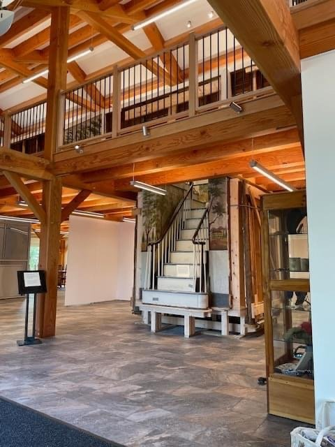
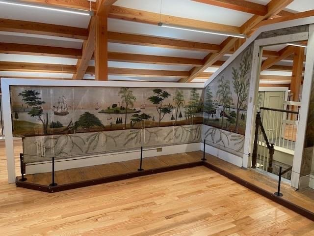

Project Details
Preserving painted history in a barn.
The Mural Museum project is a historic preservation effort centered on a barn housing rare painted murals. The work focuses on structural stabilization, environmental control, and public access — creating a framework for the long-term stewardship of these irreplaceable works.





